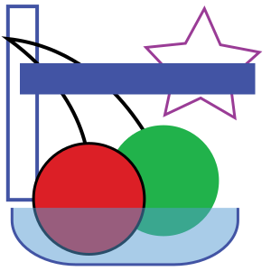

<!--
  * @file: This HTML is included via node into the main RoboPaint page it
  *        contains all the HTML DOM elements controlled by the settings JS.
 -->
<div class="buttons">
  <button id="settings-done" class="normal" data-i18n="[title]settings.buttons.done.hover;settings.buttons.done.title">settings.buttons.done.title</button>
  <button id="settings-reset" class="normal" data-i18n="[title]settings.buttons.reset.hover;settings.buttons.reset.title">settings.buttons.reset.title</button>
</div>

<h2 data-i18n>nav.toolbar.settings</h2>

<ul class="tabs">
  <li><a href="#settings-media" data-i18n>settings.tabs.media</a></li>
  <li><a href="#settings-output" data-i18n>settings.tabs.output</a></li>
  <li><a href="#settings-modes" data-i18n>settings.tabs.modes</a></li>
  <li><a href="#settings-advanced" data-i18n>settings.tabs.advanced</a></li>
</ul>

<div id="settings-output" class="settings-content">
  <fieldset id="render">
    <legend data-i18n>settings.output.render.title</legend>

    <ul class="tabs">
      <li><a href="#style-stroke" data-i18n>settings.output.render.tab1</a></li>
      <li><a href="#style-fill" data-i18n>settings.output.render.tab2</a></li>
    </ul>

    <div id="settings-preview-wrapper">
      
      <canvas id="settings-preview" width="200" height="200" data-paper-keepalive="true"></canvas>
    </div>

    <div id="style-stroke" class="settings-content">
      <div>
        <input type="checkbox" id="autostrokeenabled" class="renderpreview"/>
        <label for="autostrokeenabled" data-i18n>settings.stroke.enable</label>
        <aside data-i18n>settings.stroke.enableinfo</aside>
      </div>

      <div>
        <input type="checkbox" id="strokefills" class="renderpreview"/>
        <label for="strokefills" data-i18n>settings.stroke.fill</label>
        <aside data-i18n>settings.stroke.fillinfo</aside>
      </div>

      <div>
        <input type="checkbox" id="strokeinvisible" class="renderpreview"/>
        <label for="strokeinvisible" data-i18n>settings.stroke.invisible</label>
        <aside data-i18n>settings.stroke.invisibleinfo</aside>
      </div>

      <div>
        <input type="checkbox" id="strokeclosefilled" class="renderpreview"/>
        <label for="strokeclosefilled" data-i18n>settings.stroke.closefilled</label>
        <aside data-i18n>settings.stroke.closefilledinfo</aside>
      </div>

      <div>
        <label for="strokeprecision" data-i18n>settings.output.strokeprecision.title</label>
        <select id="strokeprecision" class="renderpreview">
          <option value="1" data-i18n>settings.output.strokeprecision.opt0</option>
          <option value="2" data-i18n>settings.output.strokeprecision.opt1</option>
          <option value="4" data-i18n>settings.output.strokeprecision.opt2</option>
          <option value="6" data-i18n>settings.output.strokeprecision.opt3</option>
          <option value="10" data-i18n>settings.output.strokeprecision.opt4</option>
          <option value="15" data-i18n>settings.output.strokeprecision.opt5</option>
        </select>
        <aside data-i18n>settings.output.strokeprecision.detail</aside>
      </div>

      <div id="overshoot">
        <label for="strokeovershoot" data-i18n>settings.output.strokeovershoot.title</label>
        <select id="strokeovershoot" class="renderpreview">
          <option value="-1" data-i18n>settings.output.strokeovershoot.optx</option>
          <option value="0" data-i18n>settings.output.strokeovershoot.opt0</option>
          <option value="1" data-i18n>settings.output.strokeovershoot.opt1</option>
          <option value="5" data-i18n>settings.output.strokeovershoot.opt2</option>
          <option value="8" data-i18n>settings.output.strokeovershoot.opt3</option>
          <option value="13" data-i18n>settings.output.strokeovershoot.opt4</option>
          <option value="20" data-i18n>settings.output.strokeovershoot.opt5</option>
        </select>
        <aside data-i18n>settings.output.strokeovershoot.detail</aside>
      </div>

      <div>
        <label for="autostrokeiteration" data-i18n>settings.trace.title</label>
        <select id="autostrokeiteration" class="renderpreview">
          <option value="1" data-i18n>settings.trace.opt1</option>
          <option value="2" data-i18n>settings.trace.opt2</option>
          <option value="4" data-i18n>settings.trace.opt4</option>
          <option value="10" data-i18n>settings.trace.opt10</option>
          <option value="20" data-i18n>settings.trace.opt20</option>
        </select>
        <aside data-i18n>settings.trace.info</aside>
      </div>

      <div>
        <label for="autostrokewidth" data-i18n>settings.trace.width.title</label>
        <select id="autostrokewidth" class="renderpreview">
          <option value="-1" data-i18n>settings.trace.width.optneg1</option>
          <option value="1" data-i18n>settings.trace.width.opt1</option>
          <option value="5" data-i18n>settings.trace.width.opt5</option>
          <option value="10" data-i18n>settings.trace.width.opt10</option>
          <option value="20" data-i18n>settings.trace.width.opt20</option>
          <option value="30" data-i18n>settings.trace.width.opt30</option>
        </select>
        <aside data-i18n>settings.trace.width.info</aside>
      </div>

      <fieldset id="render-stroke-occlusion">
        <legend>
          <div>
            <input type="checkbox" id="autostrokeocclusion" class="renderpreview"/>
            <label for="autostrokeocclusion" data-i18n>settings.stroke.occlusionall</label>
            <aside data-i18n>settings.stroke.occlusionallinfo</aside>
          </div>
        </legend>
        <div>
          <input type="checkbox" id="strokeocclusionfills" class="renderpreview"/>
          <label for="strokeocclusionfills" data-i18n>settings.stroke.occfills</label>
          <aside data-i18n>settings.stroke.occfillsinfo</aside>
        </div>
        <div>
          <input type="checkbox" id="strokeocclusionstoke" class="renderpreview"/>
          <label for="strokeocclusionstoke" data-i18n>settings.stroke.occstroke</label>
          <aside data-i18n>settings.stroke.occstrokeinfo</aside>
        </div>
        <div>
          <input type="checkbox" id="strokeocclusioncolor" class="renderpreview"/>
          <label for="strokeocclusioncolor" data-i18n>settings.stroke.occcolor</label>
          <aside data-i18n>settings.stroke.occcolorinfo</aside>
        </div>
        <div>
          <input type="checkbox" id="strokeocclusionwater" class="renderpreview"/>
          <label for="strokeocclusionwater" data-i18n>settings.stroke.occtrans</label>
          <aside data-i18n>settings.stroke.occtransinfo</aside>
        </div>
      </fieldset>

    </div>

    <div id="style-fill" class="settings-content">
      <div>
        <input type="checkbox" id="autofillenabled" class="renderpreview"/>
        <label for="autofillenabled" data-i18n>settings.fill.enable</label>
        <aside data-i18n>settings.fill.enableinfo</aside>
      </div>

      <label for="filltype" data-i18n>settings.output.filltype.title</label>
      <select id="filltype" class="renderpreview">
        <option value="zigzag" data-i18n>settings.output.filltype.opt0</option>
        <option value="zigstraight" data-i18n>settings.output.filltype.opt1</option>
        <option value="zigsmooth" data-i18n>settings.output.filltype.opt2</option>
        <option value="spiral" data-i18n>settings.output.filltype.opt3</option>
      </select>

      <div>
        <label for="fillinset" data-i18n>settings.fill.inset</label>
        <select id="fillinset" class="renderpreview">
          <option value="0">0</option>
          <option value="1">1</option>
          <option value="2">2</option>
          <option value="4">4</option>
          <option value="8">8</option>
          <option value="16">16</option>
          <option value="32">32</option>
          <option value="64">64</option>
        </select>
        <aside data-i18n>settings.fill.insetinfo</aside>
      </div>

      <fieldset>
        <legend data-i18n>settings.fill.dynamic</legend>
        <div>
          <label for="fillangle" data-i18n>settings.output.fillangle</label>
          <select id="fillangle" class="renderpreview">
            <option value="0">0&deg;</option>
            <option value="28">28&deg;</option>
            <option value="45">45&deg;</option>
            <option value="67">67&deg;</option>
            <option value="90">90&deg;</option>
            <option value="112">112&deg;</option>
            <option value="135">135&deg;</option>
            <option value="157">157&deg;</option>
          </select>
        </div>

        <div>
          <input type="checkbox" id="fillrandomize" class="renderpreview"/>
          <label for="fillrandomize" data-i18n>settings.fill.random</label>
          <aside data-i18n>settings.fill.randominfo</aside>
        </div>

        <div>
          <label for="fillspacing" data-i18n>settings.output.fillspacing.title</label>
          <select id="fillspacing" class="renderpreview">
            <option value="1" data-i18n>settings.output.fillspacing.opt0</option>
            <option value="5" data-i18n>settings.output.fillspacing.opt1</option>
            <option value="10" data-i18n>settings.output.fillspacing.opt2</option>
            <option value="15" data-i18n>settings.output.fillspacing.opt3</option>
            <option value="25" data-i18n>settings.output.fillspacing.opt4</option>
            <option value="40" data-i18n>settings.output.fillspacing.opt5</option>
            <option value="80" data-i18n>Mega (80)</option>
          </select>
        </div>

        <div>
          <label for="fillgroupingthresh" data-i18n>settings.fill.group.title</label>
          <select id="fillgroupingthresh" class="renderpreview">
            <option value="0" data-i18n>settings.fill.group.opt0</option>
            <option value="20" data-i18n>settings.fill.group.opt20</option>
            <option value="40" data-i18n>settings.fill.group.opt40</option>
            <option value="60" data-i18n>settings.fill.group.opt60</option>
            <option value="80" data-i18n>settings.fill.group.opt80</option>
            <option value="100" data-i18n>settings.fill.group.opt100</option>
          </select>
          <aside data-i18n>settings.fill.group.info</aside>
        </div>

        <div>
          <input type="checkbox" id="fillhatch" class="renderpreview"/>
          <label for="fillhatch" data-i18n>settings.fill.hatch</label>
          <aside data-i18n>settings.fill.hatchinfo</aside>
        </div>
      </fieldset>

      <fieldset>
        <legend data-i18n>settings.fill.overlay</legend>
        <div>
          <input type="checkbox" id="fillspiralalign" class="renderpreview"/>
          <label for="fillspiralalign" data-i18n>settings.fill.align</label>
          <aside data-i18n>settings.fill.aligninfo</aside>
        </div>
        <div>
          <label for="fillprecision" data-i18n>settings.output.fillprecision.title</label>
          <select id="fillprecision" class="renderpreview">
            <option value="1" data-i18n>settings.output.fillprecision.opt0</option>
            <option value="3" data-i18n>settings.output.fillprecision.opt1</option>
            <option value="7" data-i18n>settings.output.fillprecision.opt2</option>
            <option value="14" data-i18n>settings.output.fillprecision.opt3</option>
            <option value="21" data-i18n>settings.output.fillprecision.opt4</option>
            <option value="35" data-i18n>settings.output.fillprecision.opt5</option>
          </select>
          <aside data-i18n>settings.fill.precisioninfo</aside>
        </div>
      </fieldset>

      <div>
        <label for="autofilliteration" data-i18n>settings.trace.title</label>
        <select id="autofilliteration" class="renderpreview">
          <option value="1" data-i18n>settings.trace.opt1</option>
          <option value="2" data-i18n>settings.trace.opt2</option>
          <option value="4" data-i18n>settings.trace.opt4</option>
          <option value="10" data-i18n>settings.trace.opt10</option>
          <option value="20" data-i18n>settings.trace.opt20</option>
        </select>
        <aside data-i18n>settings.trace.info</aside>
      </div>

      <div>
        <label for="autofillwidth" data-i18n>settings.trace.width.title</label>
        <select id="autofillwidth" class="renderpreview">
          <option value="-1" data-i18n>settings.trace.width.optneg1</option>
          <option value="1" data-i18n>settings.trace.width.opt1</option>
          <option value="5" data-i18n>settings.trace.width.opt5</option>
          <option value="10" data-i18n>settings.trace.width.opt10</option>
          <option value="20" data-i18n>settings.trace.width.opt20</option>
          <option value="30" data-i18n>settings.trace.width.opt30</option>
        </select>
        <aside data-i18n>settings.trace.width.info</aside>
      </div>

      <div>
        <input type="checkbox" id="fillocclusionfills" class="renderpreview"/>
        <label for="fillocclusionfills" data-i18n>settings.fill.occ</label>
        <aside data-i18n>settings.fill.occinfo</aside>
      </div>
    </div>

    <fieldset>
      <legend data-i18n>settings.output.render.general</legend>
      <div>
        <input type="checkbox" id="skipwhite"/>
        <label for="skipwhite" data-i18n>settings.output.skipwhite</label>
        <aside data-i18n>settings.output.skipwhiteinfo</aside>
      </div>

      <div>
        <input type="checkbox" id="prefillbuffer"/>
        <label for="prefillbuffer" data-i18n>settings.output.prefill</label>
        <aside data-i18n>settings.output.prefillinfo</aside>
      </div>

      <div>
        <input type="checkbox" id="optimizepath"/>
        <label for="optimizepath" data-i18n>settings.output.optimize</label>
        <aside data-i18n>settings.output.optimizeinfo</aside>
      </div>
    </fieldset>
  </fieldset>
</div>

<!-- ======================================================================= -->

<div id="settings-media" class="settings-content">
  <fieldset>
    <legend data-i18n>settings.output.generaltitle</legend>
    <fieldset class="speed">
      <legend data-i18n>settings.output.move.title</legend>
      <div>
        <label for="movespeed" data-i18n>settings.output.move.up</label>
        <input type="range" id="movespeed" min="10" max="100" data-i18n="[title]settings.output.move.hint"/>
      </div>
      <div>
        <label for="paintspeed" data-i18n>settings.output.move.down</label>
        <input type="range" id="paintspeed" min="10" max="100" data-i18n="[title]settings.output.move.hint"/>
      </div>
    </fieldset>
  </fieldset>
  <fieldset>
    <legend data-i18n>settings.media.implements</legend>
    <div id="penmodes">
      <label for="penmode" data-i18n>settings.output.penmode.title</label>
      <select id="penmode">
        <option value="0" data-i18n>settings.output.penmode.opt0</option>
        <option value="1" data-i18n>settings.output.penmode.opt1</option>
        <option value="2" data-i18n>settings.output.penmode.opt2</option>
        <option value="3" data-i18n>settings.output.penmode.opt3</option>
      </select>
    </div>
  </fieldset>
  <fieldset>
    <legend data-i18n>settings.media.media</legend>

    <fieldset id="colorsets">
      <legend data-i18n>settings.output.colorsets.title</legend>
      <select id="colorset"></select>

      <div class="left column">
        <ul class="colors"></ul>
      </div>

      <div class="right column">
        <div class="meta">
          <label data-i18n>settings.output.colorsets.type</label>
          <span class="type"></span>
        </div>
        <div class="meta">
          <label data-i18n>settings.output.colorsets.name</label>
          <span class="name"></span>
        </div>
        <div class="meta">
          <label data-i18n>settings.output.colorsets.media</label>
          <span class="media"></span>
        </div>
        <div class="meta">
          <label data-i18n>settings.output.colorsets.desc</label>
          <span class="description"></span>
        </div>
      </div>

      <hr>

      <div>
        <input type="checkbox" id="showcolortext"/>
        <label for="showcolortext" data-i18n>settings.output.showcolortext.title</label>
        <aside data-i18n>settings.output.showcolortext.detail</aside>
      </div>
    </fieldset>

    <fieldset>
      <legend data-i18n>settings.media.refill</legend>
      <div>
        <label for="refillmode" data-i18n>settings.output.refillmode.title</label>
        <select id="refillmode">
          <option value="0" data-i18n>settings.output.refillmode.opt0</option>
          <option value="1" data-i18n>settings.output.refillmode.opt1</option>
        </select>
        <aside data-i18n>settings.output.refillmode.detail</aside>
      </div>

      <div id="maxpaint">
        <label for="maxpaintdistance" data-i18n>settings.output.maxpaintdistance.title</label>
        <input type="range" data-i18n="[title]settings.output.maxpaintdistance.hint" id="maxpaintdistance" min="500" max="20000" />
        <aside data-i18n>settings.output.maxpaintdistance.detail</aside>
      </div>

      <div>
        <label for="refillaction" data-i18n>settings.output.refillaction.title</label>
        <select id="refillaction">
          <option value="0" data-i18n>settings.output.refillaction.opt0</option>
          <option value="1" data-i18n>settings.output.refillaction.opt1</option>
          <option value="2" data-i18n>settings.output.refillaction.opt2</option>
        </select>
        <aside data-i18n>settings.output.refillaction.detail</aside>
      </div>
    </fieldset>
  </fieldset>
</div>

<div id="settings-advanced" class="settings-content">
  <fieldset>
    <legend data-i18n>settings.common.servo.title</legend>
    <div>
      <label for="servoup" data-i18n>settings.common.servo.up</label>
      <input type="range" id="servoup" min="0" max="1000"/>
    </div>

    <div>
      <label for="servopaint" data-i18n>settings.common.servo.paint</label>
      <input type="range" id="servopaint" min="0" max="1000"/>
    </div>

    <div>
      <label for="servowash" data-i18n>settings.common.servo.wash</label>
      <input type="range" id="servowash" min="0" max="1000"/>
    </div>

    <div>
      <label for="servotime" data-i18n>settings.common.servo.time</label>
      <input type="range" id="servotime" min="0" value="200" max="1000"/>
      <aside data-i18n>settings.common.servo.timedetails</aside>
    </div>
  </fieldset>

  <fieldset class="hidden">
    <legend>Serial connection</legend>
      <select id="ports" title="Available serial ports">
        <option value="auto">Auto-port</option>
      </select>
      <button id="connect">Connect</button>
      <aside>This currently doesn't work. Here's hoping auto-detect works for ya!</aside>
  </fieldset>

  <fieldset>
    <legend data-i18n>settings.advanced.steppers.title</legend>

    <div>
      <input type="checkbox" id="invertx"/>
      <label for="invertx" data-i18n>settings.advanced.steppers.invertx</label> <b> | </b>
      <input type="checkbox" id="inverty"/>
      <label for="inverty" data-i18n>settings.advanced.steppers.inverty</label>
      <aside data-i18n>settings.advanced.steppers.invertdetail</aside>
    </div>

    <div>
      <label for="latencyoffset" data-i18n>settings.advanced.steppers.buffer.title</label>
      <input type="range" data-i18n="[title]settings.advanced.steppers.buffer.hover" id="latencyoffset" min="-100" max="500" />
      <aside data-i18n>settings.advanced.steppers.buffer.detail</aside>
    </div>

    <div>
      <input type="checkbox" id="swapmotors"/>
      <label for="swapmotors" data-i18n>settings.advanced.steppers.swap</label>
      <aside data-i18n>settings.advanced.steppers.swapdetail</aside>
    </div>
  </fieldset>

  <fieldset>
    <legend data-i18n>settings.advanced.misctitle</legend>

    <div>
      <input type="checkbox" id="openlast"/>
      <label for="openlast" data-i18n>settings.advanced.openlast</label>
    </div>

    <div>
      <input type="checkbox" id="rpdebug"/>
      <label for="rpdebug" data-i18n>settings.advanced.debug</label>
      <aside data-i18n>settings.advanced.debugdetail</aside>
    </div>

    <div>
      <label for="bottype" data-i18n>settings.advanced.bottype.title</label>
      <select id="bottype" data-i18n="[title]settings.advanced.bottype.hover">
      </select>
      <aside data-i18n>settings.advanced.bottype.detail</aside>
    </div>
  </fieldset>

  <fieldset>
    <legend data-i18n>settings.advanced.api.title</legend>
    <div class="httpport">
      <label for="httpport"><b data-i18n>settings.advanced.api.server</b> (<span>...</span>):</label>
      <input type="number" id="httpport"/>

      <aside data-i18n>settings.advanced.api.detail</aside>
    </div>

    <div>
      <label for="httplocalonly" data-i18n>settings.advanced.httplocalonly.title</label>
      <input type="checkbox" id="httplocalonly"/>
      <aside data-i18n>settings.advanced.httplocalonly.detail</aside>
    </div>
  </fieldset>
</div>

<div id="settings-modes" class="settings-content">
  <fieldset class="advanced-modes">
    <legend data-i18n>settings.advanced.modes.title</legend>
    <aside data-i18n>settings.advanced.modes.detail</aside>
  </fieldset>
</div>
